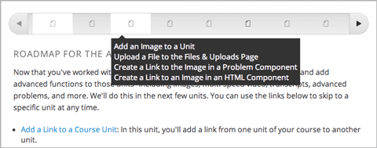
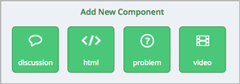
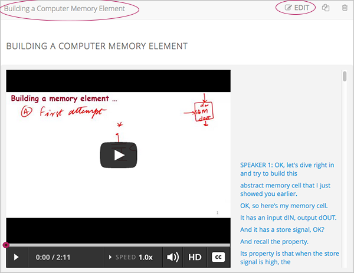
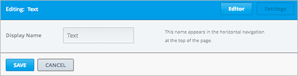
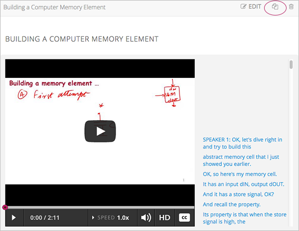
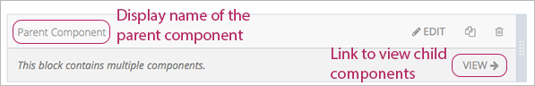
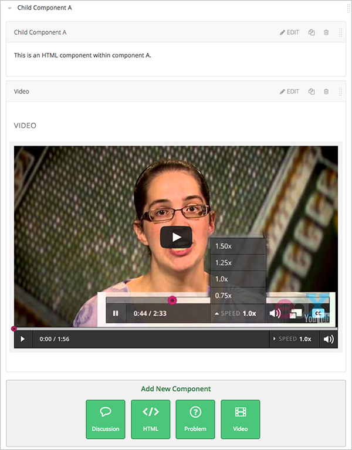
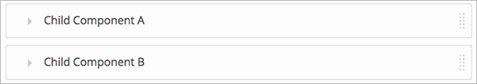
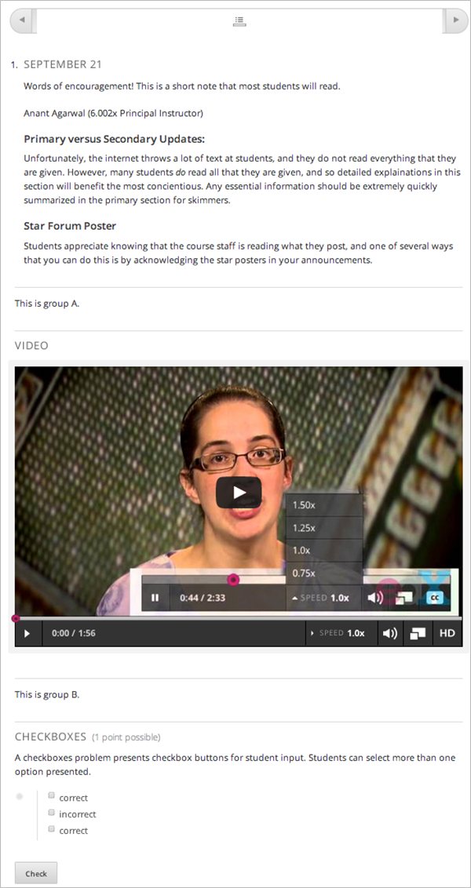
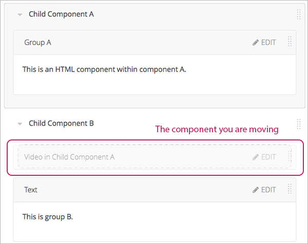

本章主要描述如何创建课程组件：
要了解更多有关特殊组件类型的信息，请参考以下章节内容：
课程组件是单元的组成部分，包括了您最具体的课程内容。一个单元可能包含一个或多个课程组件。
学生能看见某个单元下所有元素的名称，只需将鼠标停留在课程进度条的某个单元上即可。
系统默认的课程组件有以下四种：
在 添加新组件 选项下单击您想添加的组件类型以添加组件。
更多信息请参考相应组件的软件文档：
添加组件以后，您必须 publish the unit ，学生才能看到。
点击 编辑 以编辑组件。
按照指导编辑组件。
编辑组件之后，您需要 publish the unit 让学生看到组件。
所有组件都有显示名，当编辑组件时，显示名会出现在标题栏。 当学生将鼠标指针停留在某个单元标记上时，也能看见组件的显示名。
如何设置组件的显示名：

不同的板块类型在“设置”对话框中的字段不同，但都有 显示名 字段。
当复制某个板块时，该组件的正下方会出现一个新拷贝，您可对它进行操作。 通常而言，复制组件然后编辑拷贝能更快地创建新内容。
单击组件标题栏中的“复制”图标：
按照提示编辑您的组件。
复制组件之后，您需要重新 publish the unit ，学生才能看到新的组件。
Note
您不能复制内容实验。
Caution
删除组件前请再次确认是否真的需要删除。删除操作是不可逆的。
遵循以下步骤删除组件：
组件删除后，您需要重新 publish the unit ，否则学生仍能看到已删除的组件。
在特定情况下，您可能会设置组件中嵌套另一个组件。 例如，如果您希望组件中包含条件组件或内容实验，您必须在创建嵌套组件。 详情请参考 Creating Content Experiments for more information.
包含其他组件的组件称为 父组件；被包含的组件称为 子组件 。
在单元页中，父组件显示组件名和 查看 链接，如下：
父组件不直接包含内容。HTML文件、视频和程序都包含在子组件中。
父组件显示组件名。当单元为草稿或属性为私有时，点击父组件中的 编辑 项更改组件名。
Note
特殊类型的父组件，如内容实验，可以编辑附加属性。
当您在父组件中点击 查看 时，父组件页面开启，页面中显示所有的子组件。 下图中子组件含有HTML组件和视频文件：
单击子组件名旁边的箭头可以收起组件内容：
再次点击箭头可以展开内容：
详情请参阅：
如果您用XML创建组件，您可以将XML课程导入Studio中以确认其结构是否符合您的要求。
更多关于使用XML文件的信息，包括关于术语的信息，请参阅 edX XML Tutorial 。
下图是Studio中用来创建单元和组件的XML。
单元的XML是：
<vertical display_name="Unit 1">
<html url_name="6a5cf0ea41a54b209e0815147896d1b2"/>
<vertical url_name="131a499ddaa3474194c1aa2eced34455"/>
</vertical>
上例中的 <vertical url_name="131a499ddaa3474194c1aa2eced34455"/> 元素引用自父组件。
<vertical display_name="Parent Component">
<vertical url_name="2758bbc495dd40d59050da15b40bd9a5"/>
<vertical url_name="c5c8b27c2c5546e784432f3b2b6cf2ea"/>
</vertical>
两个引用自父组件的vertical包含了您课程中的实际内容。
<vertical display_name="Child Component A">
<html url_name="4471618afafb45bfb86cbe511973e225"/>
<video url_name="fbd800d0bdbd4cb69ac70c47c9f699e1"/>
</vertical>
<vertical display_name="Child Component B">
<html url_name="dd6ef295fda74a639842e1a49c66b2c7"/>
<problem url_name="b40ecbe4ed1b4280ae93e2a158edae6f"/>
</vertical>
理论上，组件嵌套的层数是无限的。
在学生视角中，所有父组件和子组件都陈列在单元页面中。 下图是学生视角中的单元界面：
Note
嵌套组件的可见性取决于所在单元的可见性。父单元必须是对学生公开的属性，学生才能看到嵌套组件。 更多信息请参阅： 单元发布状态与对学生可见性 。
与课程大纲中其他部件一样，您可以通过拽操作重组子组件。 将鼠标悬停在屏幕右边的元素上，直到光标变成四向箭头。 然后点击并拖拽元素到您希望的位置。
此外，当您对组件进行多级嵌套时，您可以将子组件拖拽到不同的父组件下。 例如，您可以选择A子组件中的视频组件，然后将它拖进B子组件。 选择视频组件，拖拽到B组件然后松开右键。组件就会出现在新的位置里。
您也可以将子组件拖拽出父组件，该组件就和父组件处于同一层级了。
Note
您不能将内容实验拖拽出测试组。